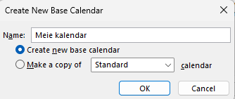
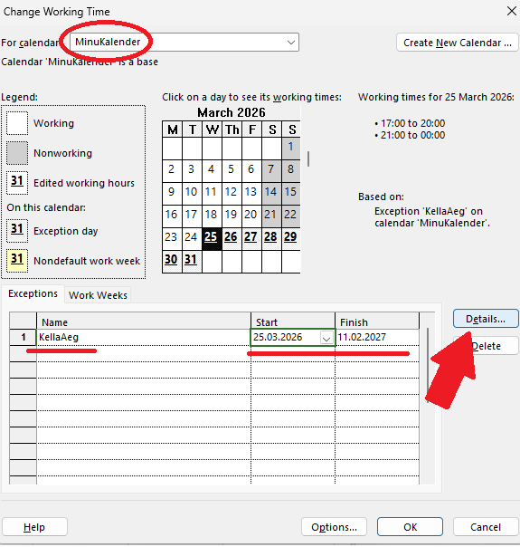
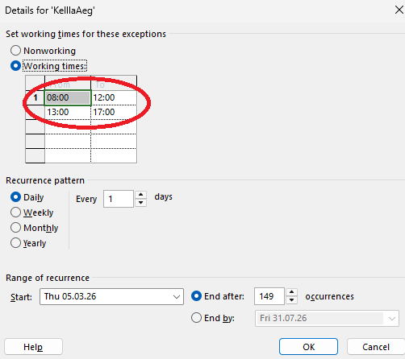
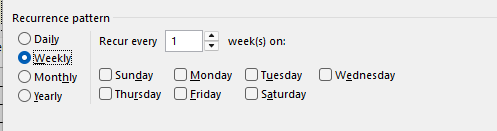
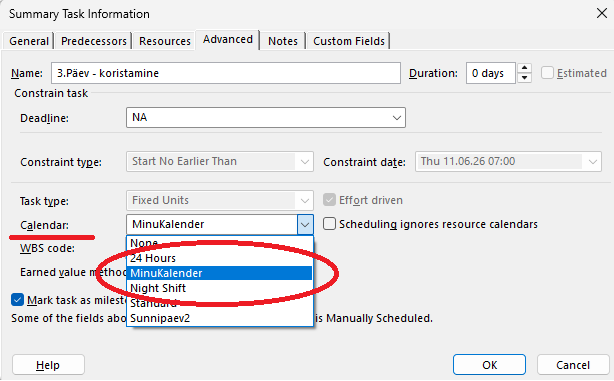
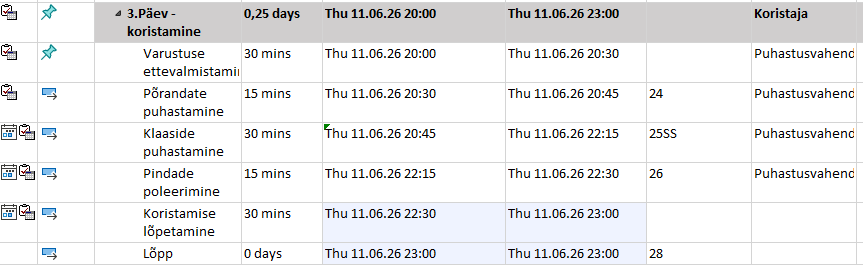
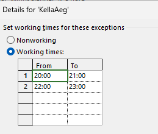

1. Uue kalendri loomine
Kalendri loomiseks:
- Ava Microsoft Project.
- Vali Project → Change Working Time.
- Klõpsa Create New Calendar.
- Anna kalendrile nimi

2. Tööaja muutmine
Kalendri tööaja muutmiseks:
- Vali kalender ja klõpsa Details.
- Määra tööajad nädalapäevade kaupa.
- Lisa eripäevad (näiteks pühad)



3. Kalendri kasutamine
Kalendri rakendamiseks ülesandele:
- Topeltklõps ülesandel.
- Väljal Calendar vali loodud kalender.
- Projekt võtab arvesse töö- ja puhkepäevi.
- Tööaeg oli järgmine:
- Töö- ja puhkepäevi (näiteks nädalavahetused ja pühad).
- Tööaega iga päeva kohta (nt 8:00–17:00).
- Erandeid, näiteks puhkused või ärireisid.



Kalendri mõju ajakavale
Uus kalender mõjutab otseselt ülesannete tähtaegu ja projekti graafikut. See arvestab:
Kalendri muutmisel arvutab Project automaatselt ülesannete algus- ja lõppkuupäevad, uuendab Gantti diagramme ja hoiab projekti ajakava täpse.